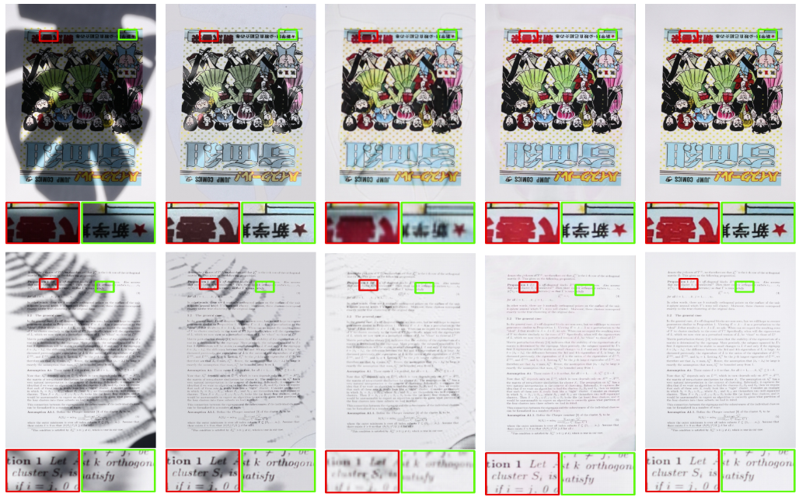

|
Jiarui LI(李佳睿) Hello, everyone! My name is Jiarui Li. My research interest lies in computational imaging and tracking for robots. Now, I am in my third year of Qingdao University in Computer Science as an undergraduate student. During the three years, I have been fortunate to work closely with Prof. Dongming Xing and Dr. Zeyu Xiao on several research projects regarding medical robots and computational imaging. Also, great thanks to Prof. Xin Yuan and Prof. Junyi Geng for guidance and cooperation. |

|
ResearchMy research work and interests include computer vision, machine vision especially for robots, computational imaging, medical robots and so on. Beblow are the projects that related to these areas. |
|  |
Document Shadow Removal We proposed a new architecture for document shadow removal, and this architecture combines with mask estimation, feature fusion based on UNet which shows state-of-the-art on SD7K dataset. Thanks to Dr. Zeyu's advice and cooperation. |

|
High-Frequency Shape and Albedo from Shading using Natural Image Statistics
Jonathan T. Barron, Jitendra Malik CVPR, 2011 bibtex This paper is subsumed by SIRFS. |

|
Discovering Efficiency in Coarse-To-Fine Texture Classification
Jonathan T. Barron, Jitendra Malik Technical Report, 2010 bibtex A model and feature representation that allows for sub-linear coarse-to-fine semantic segmentation. |

|
Parallelizing Reinforcement Learning
Jonathan T. Barron, Dave Golland, Nicholas J. Hay Technical Report, 2009 bibtex Markov Decision Problems which lie in a low-dimensional latent space can be decomposed, allowing modified RL algorithms to run orders of magnitude faster in parallel. |

|
Blind Date: Using Proper Motions to Determine the Ages of Historical Images
Jonathan T. Barron, David W. Hogg, Dustin Lang, Sam Roweis The Astronomical Journal, 136, 2008 Using the relative motions of stars we can accurately estimate the date of origin of historical astronomical images. |

|
Cleaning the USNO-B Catalog Through Automatic Detection of Optical Artifacts
Jonathan T. Barron, Christopher Stumm, David W. Hogg, Dustin Lang, Sam Roweis The Astronomical Journal, 135, 2008 We use computer vision techniques to identify and remove diffraction spikes and reflection halos in the USNO-B Catalog. In use at Astrometry.net |
Miscellanea |


|
Many thanks to the source code. |